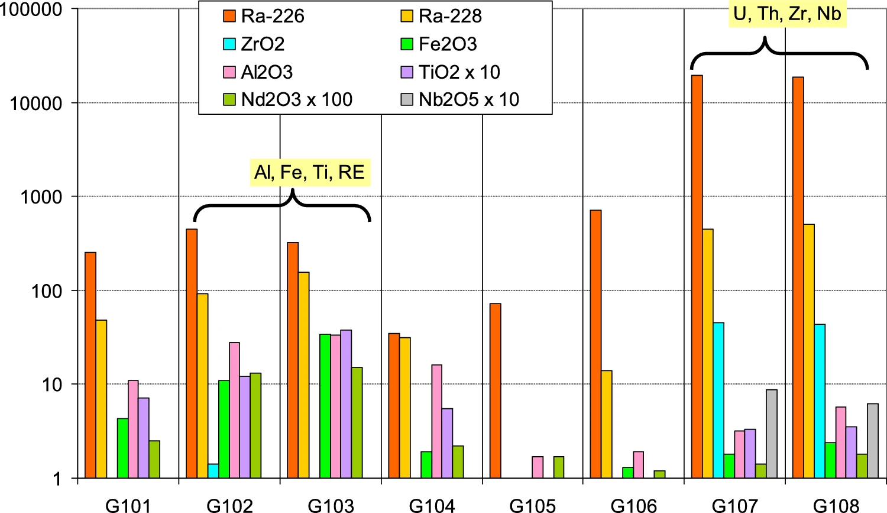

A remarkable small local natural radiation anomaly in Poços de Caldas, Brazil

Resumo em Português
Anomalias radiológicas naturais ocorrem na natureza como resultado da variabilidade geológica e geoquímica. Elas podem indicar recursos minerais, mas também podem representar um risco à saúde pública. Neste trabalho, reportamos os resultados da investigação radiométrica de uma anomalia de radiação pequena, porém intensa, detectada durante um levantamento regional de taxa de dose ambiente nos arredores da cidade de Poços de Caldas, Minas Gerais, Brasil, discutindo sua significância radiológica. A anomalia possui apenas alguns metros de extensão e apresenta taxa de dose de até ~5 µSv/h acima dos valores locais de fundo, tipicamente 0,1 µSv/h. No âmbito de um workshop organizado pela Agência Internacional de Energia Atômica (AIEA), foi realizado um exercício de medição em campo no local, com o objetivo de capacitar participantes e conduzir uma investigação mais detalhada da anomalia.O resultado geral indica que a anomalia se deve, muito provavelmente, à circulação de fluidos hidrotermais no sistema de fraturas que intrude fases portadoras de urânio — ainda não determinadas — em uma rocha sedimentar radiologicamente não suspeita. A extensão da anomalia foi delimitada como inferior a aproximadamente 5 metros, com concentração local de radônio no solo da ordem de alguns MBq/m³. São apresentados os dados da avaliação detalhada e mapas da anomalia, sendo discutida a adequação dos métodos de medição escolhidos. Também são abordadas as possíveis consequências desse tipo de ocorrência em termos de radioproteção e sua adequação para treinamento em condições de campo.